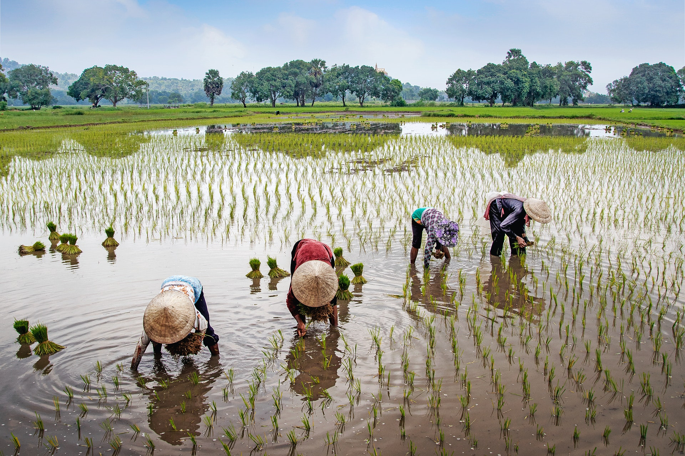
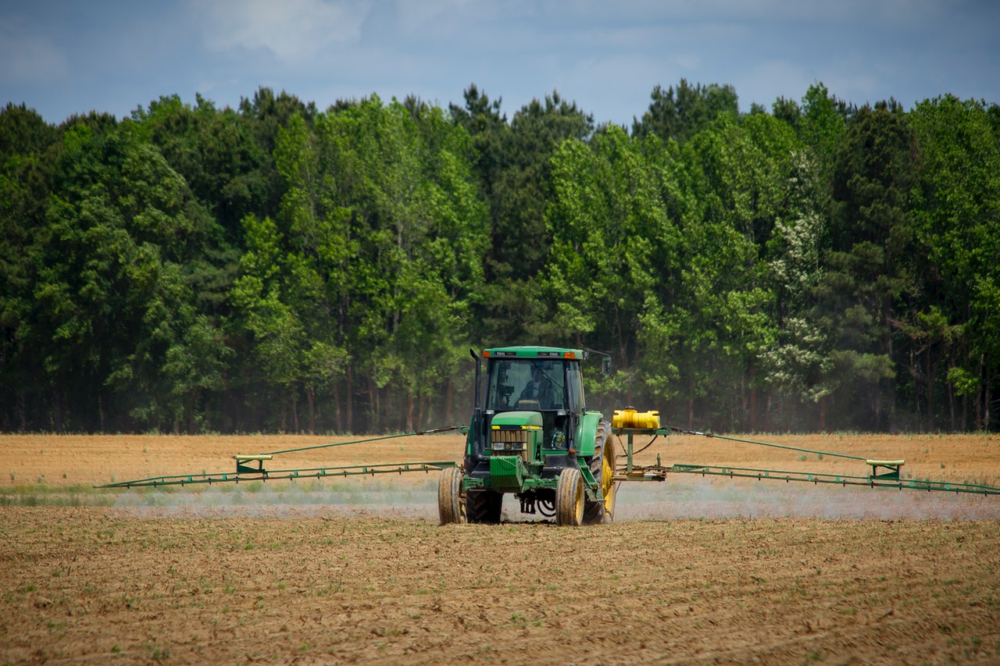
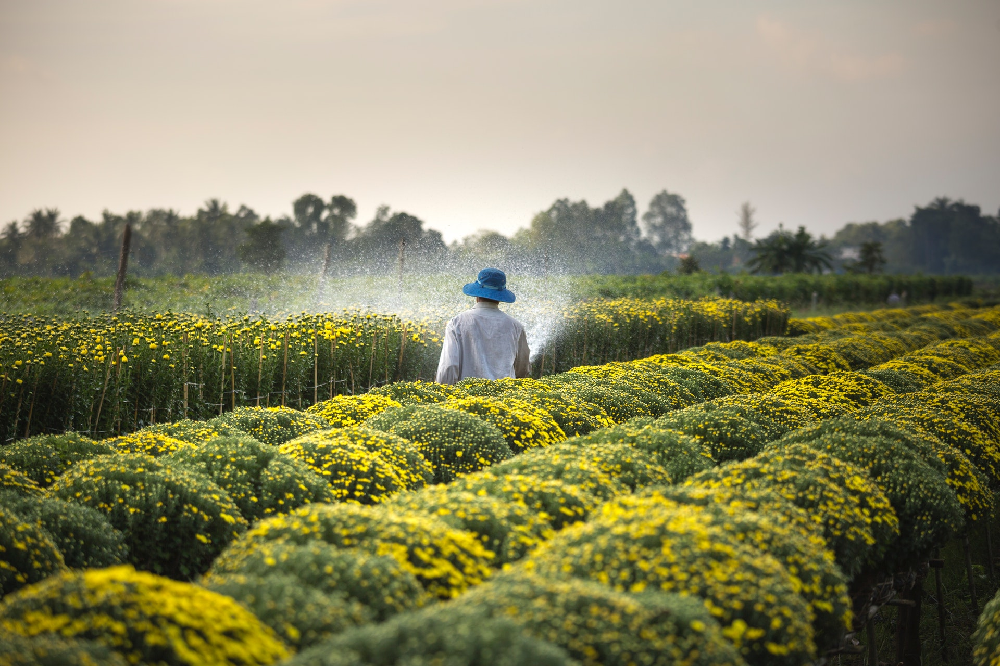

-

讓米飯返璞歸真！專訪台灣最老字號小農品牌「掌生穀粒」創辦人程昀儀
「我們穿上了農業的靈魂，領悟文化創意的生命。」 這段文字寫在掌生穀粒官網上，介紹品牌精神的第一句裡。2006年，前廣告人程昀儀創立了掌生穀粒，在那個網路媒體尚未普及的年代擔任各個農家的出版社，替他們「出版」農產品，包裝、寫文案、行銷，小農是作家，而她就是責任編輯。
閱讀更多 -

帶著麥克風進農田！她走遍台灣農村，讓在地故事被聽見
農村再生十年，從生產、環境、人文、生態、體驗、休閒到青年參與，再再展現豐沛能量。尤其有愈來愈多年輕世代在水保局有系統的帶領下走入社區、認識農村，發揮創意幫助農村擁抱改變，成為翻轉農業與實現永續的關鍵。
閱讀更多 -

翻轉農村新活力：以創意帶動社區，看見青年在地扎根與實踐永續的勇氣
「出生在台中農家的林大米，走進田裡訪問，透過廣播讓更多人有機會了解農友背後的故事，雲林農夫吳嘉在分享以古法晾曬花生，或是麻豆文旦青年李佳翰種植柚子時，不刻意調整柚子甜度，使柚子保持自然風味。讓聽眾建立對農村的共同記憶。
閱讀更多